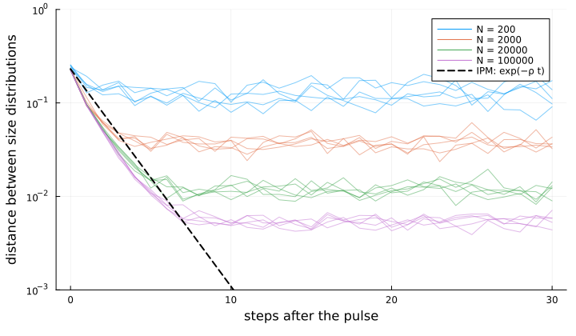

Resilience of an individual-based population
Simon Frost
Overview
After a disturbance, how fast does a structured population return to its usual composition? For the deterministic integral projection model (IPM) the answer is a number: the population converges to its stable size distribution at the rate ln(λ₁/|λ₂|) per step, from the two leading eigenvalues of the kernel. This is the resilience that ResilienceCore.jl computes for a projection matrix. The individual-based model (IBM) of this package is that IPM’s finite-N realisation. This vignette measures its return rate from simulations, and asks how close it comes to the IPM’s value and how this depends on population size.
The simulation-based measure is recovery from DynamicalResilience.jl. It works on any problem with SciML’s integrator interface. IBMProblem gives the IBM that interface: its state is the population binned on the IPM’s mesh, so IBM and IPM states can be compared directly.
ENV["GKSwstype"] = "100"
using IndividualBasedPopulationDynamics
using IntegralProjectionModels
import StructuredPopulationCore as SPC
import ResilienceCore
using DynamicalResilience: recovery
using LinearAlgebra, Plots, Random, StatisticsThe IPM and its resilience
The vital rates of the first vignette: survival that does not depend on size, growth towards 0.5 + 0.8z, and recruits of size about 1. Fecundity is set so that λ₁ ≈ 1. The population then neither grows nor declines, so populations of different sizes keep their size during a run.
s = LinearSurvival(1.0, 0.0) # survival ≈ 0.731
g = NormalGrowth(0.5, 0.8, 0.4)
f = FecundityRate(-1.313, 0.0, 1.0, 0.3, 1.0) # ≈ 0.269 recruits per individual
dom = SPC.ContinuousDomain(0.0, 6.0, 60)
kernel = PKernel(s, g, dom) + FKernel(f, dom)
A = ResilienceCore.linearise(IPMProblem(kernel, dom, ones(dom.n_meshpoints), (0, 1)))
ev = sort(abs.(eigvals(Matrix(A.A))); rev=true)
ρ = ResilienceCore.resilience(A)
(λ₁=round(ev[1]; digits=4), λ₂=round(ev[2]; digits=4), λ₃=round(ev[3]; digits=4),
resilience=round(ρ; digits=3))(λ₁ = 0.9989, λ₂ = 0.5845, λ₃ = 0.4655, resilience = 0.536)The IPM forgets a disturbance to its size distribution by a factor |λ₂|/λ₁ ≈ 0.59 per step. The third eigenvalue is not much smaller, so straight after a disturbance the return is somewhat faster than ρ.
A pulse: removing every juvenile
The population starts at the stable size distribution, scaled to N individuals. At step 5 every juvenile (z < 1.5) is removed, for example by a cohort failure. recovery runs the IBM twice, with and without the pulse, and records the distance between the two size distributions (proportions per bin). Before the pulse the second run replays the first exactly (reinit! restarts the random number generator). After it the two runs draw different random numbers, because the populations differ. So the distance does not fall to zero: it stops at a floor of sampling noise, of order 1/√N.
vals, vecs = eigen(Matrix(A.A))
w = abs.(real.(vecs[:, argmax(real.(vals))]))
stable(N) = N .* w ./ sum(w)
proportions(u) = u ./ max(sum(u), 1)
cull(u, rng) = (v = copy(u); v[1:15] .= 0; v)
Ns = (200, 2_000, 20_000, 100_000)
runs = Dict(N => [recovery(IBMProblem(VitalRates(s, g, f), stable(N), (0, 40); domain=dom,
seed), IBMStepping();
perturb=cull, observe=proportions, t_pulse=5, horizon=30,
interval=1) for seed in 1:5]
for N in Ns)
fig = plot(; yscale=:log10, xlabel="steps after the pulse",
ylabel="distance between size distributions", legend=:topright,
ylims=(1e-3, 1), size=(720, 420))
for (k, N) in enumerate(Ns)
for r in runs[N]
plot!(fig, r.t, r.distance; color=k, alpha=0.5, label="")
end
plot!(fig, [NaN], [NaN]; color=k, label="N = $N")
end
d0 = mean(r.distance[1] for N in Ns for r in runs[N])
plot!(fig, 0:30, d0 .* exp.(-ρ .* (0:30)); color=:black, ls=:dash, lw=2,
label="IPM: exp(−ρ t)")
fig
The pulse moves the size distribution by 0.22 to 0.25 in every population. The distance then falls at about the IPM’s rate until it meets the noise floor: within a step or two for N = 200, and only after about 6 steps for N = 100 000.
Estimating the return rate
recovery fits the logarithm of the distance against time over a window of distances, given as fractions of the initial one. A window that reaches into the noise floor fits the floor, and the rate comes out near zero. The floor of each run is estimated from its last ten distances. The fit then uses only distances from the pulse itself down to twice the floor:
floor_of(r) = median(r.distance[(end - 9):end])
function return_rate(r)
lo = 2 * floor_of(r) / r.distance[1]
lo < 1 || return NaN # the floor is as large as the pulse
keep = findall(d -> lo * r.distance[1] <= d <= r.distance[1], r.distance)
length(keep) >= 3 || return NaN
t, y = r.t[keep], log.(r.distance[keep])
return -cov(t, y) / var(t)
end
naive(r) = r.return_rate # recovery's default window (0.1 to 1e-4)
[(N=N, floor=round(mean(floor_of, runs[N]); sigdigits=2),
floor_times_sqrtN=round(mean(floor_of, runs[N]) * sqrt(N); digits=2),
rate_above_floor=round.(return_rate.(runs[N]); digits=2),
rate_default_window=round(mean(naive, runs[N]); digits=3)) for N in Ns]4-element Vector{@NamedTuple{N::Int64, floor::Float64, floor_times_sqrtN::Float64, rate_above_floor::Vector{Float64}, rate_default_window::Float64}}:
(N = 200, floor = 0.13, floor_times_sqrtN = 1.87, rate_above_floor = [NaN, NaN, NaN, NaN, NaN], rate_default_window = NaN)
(N = 2000, floor = 0.038, floor_times_sqrtN = 1.71, rate_above_floor = [NaN, NaN, NaN, NaN, NaN], rate_default_window = NaN)
(N = 20000, floor = 0.012, floor_times_sqrtN = 1.69, rate_above_floor = [0.62, 0.66, 0.64, 0.68, 0.63], rate_default_window = 0.007)
(N = 100000, floor = 0.0055, floor_times_sqrtN = 1.74, rate_above_floor = [0.6, 0.64, 0.65, 0.66, 0.59], rate_default_window = 0.016)Three things stand out:
- The noise floor scales as
1/√N, at about1.7/√N, as sampling noise between two populations ofNindividuals should. - Above the floor the IBM recovers at about the IPM’s rate. With 20 000 and 100 000 individuals the five estimates lie between 0.59 and 0.68, 10 to 25% above
ρ ≈ 0.54. The fit starts at the pulse, where the faster third mode (ln(λ₁/|λ₃|) ≈ 0.76) still contributes. AtN = 2 000andN = 200fewer than three distances lie above twice the floor, and there is nothing to fit. - The default window fails.
recovery’s default window reaches down to1e-4of the pulse, deep into the floor. It returns no rate at all for the small populations and rates near zero (0.007 and 0.016) for the large ones. Choose the window from the floor, or average over replicates first.
Caveats
- The IBM here is density-independent, as is its IPM: “recovery” means recovery of the size distribution, not of a population size. Total numbers neither return nor diverge (
λ₁ ≈ 1). - The common random numbers end at the pulse, because removing individuals changes the order in which the remaining ones draw random numbers. A coupling that kept the individuals’ own random streams would lower the floor.
- The pulse acts at the resolution of the mesh:
set_u!removes individuals bin by bin.